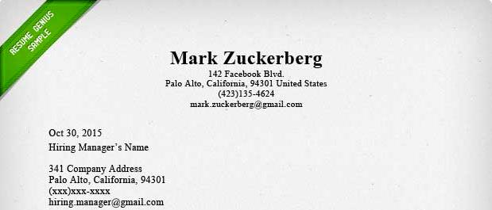

- Step 1: The Header
When writing a header, you should always include your employer's and your own contact information so that it will be convenient for your employer to contact you.

×

Well, it is a one page document that is sent with a resume when applying for a job; it contains a brief summary of a person's experiences and skills, a person's request to meet an employer, and a person's purpose for applying for a job.
When writing a header, you should always include your employer's and your own contact information so that it will be convenient for your employer to contact you.
In the Introduction, explain how you heard about the position and why you are interested in it. Briefly explain your past experiences, especially ones that are notable. Be sure to address your employer with their name to ensure them that you are prepared for this job. This should be 2-3 sentences.
The Body is where the main focus of your cover letter should be. Expand on the skills you have that would be helpful for the job that you are applying to. Explain your past experiences and education. Try to elaborate and complement your resume rather than restating it as this would bore the employer. This should be 1-2 paragraphs.
The Conclusion is where you can "hit it home." First, clearly explain what you will do to contact the company. Be sure to thank the employer in a mature fashion and include your phone number or email in this paragraph.
Use 1"-1.5" margins to not strain the eyes. The minimum font size you should use is 12px because this is the standard font. Anything smaller will be too hard to read, especially because your cover letter is on paper. Use a professional font, such as a Sans or Sans Serif font; using any font that has swirls or is very bright will be strenuous to read, which might be the reason why the employer does not want to read your cover letter. Lastly, set the alignment of the paper to "Left" because this is how we generally read.
To show that you genuinely care about the job opening, address the employer by his or her name. Do not use any first person pronouns except for "I"; using "you" will sound too informal. Do not make any unclear references and be sure to explain enough information for the employer to understand who you are. Remember: a cover letter is a brief summary of your résumé.
Write maturely. This means that you should not use contractions, such as "couldn't" or "can't." Be sure to avoid vague pronouns or unclear references because this will leave the employer confused. Try not to use big words to convey your message, but do not use informal slang terms as well; use vocabulary that you are comfortable with.
Do not sound unsure of yourself; you are trying to appeal to the employer! For example, instead of saying "I think I am fit for this job because XYZ.", you should say "I am a fit employee for this company due to my XYZ experiences". Think about it: would you rather have an employee who lacks confidence and seems like they do not know what they are doing or would you rather have an employee who is confident and ready to take on a challenge? Probably the latter.